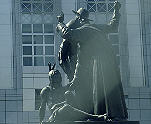

呂清夫 撰文

紀念碑的中軸矗立著尤里卡像（Eureka），高達三十呎，環繞其四周尚有四座雕像，其中的一座雕像塑造了三個人，亦即牛仔、傳教士、及一個柔順的印第安人（見左圖）。單單這個部份多年來一直發生問題，根據舊金山藝術委員會（S.F. Art Commission）的調查，它一向是原住民（印第安人）塗鴉及破壞的對象，原住民並希望將之移走，至於牛仔雕像手中原有的套索也早就被人拆走。 為了緩和破壞者的情緒，並表明對原住民的歉意，一年前已有人提出了一個折衷案。那就是在基座四周雋刻三個牌子，一則表明這個紀念碑與舊市府遺址的關連性，二則詳述其淵源及象徵的意義，三則敘述原住民在傳教士及殖民者的手下所受的苦難。其中的第三個牌子當初準備這樣寫︰「昔日的三個雕像，一個原住民，一個傳教士，一個牛仔，被創造出來表現加州傳教事業的草創。傳教士於一七六九年初次抵達加州，意圖要使三十萬原住民改信基督教。由於他們的努力，在一八三四年，改宗者已經將近五萬六千人，…但有十五萬人死亡，一半死於疾病、武裝攻擊與虐待。」但是這個牌子卻三面不討好，原住民說死亡人數不止這些，同時紀念碑的位置太過醒目。宗教界則認為不應挑起對立，更不必鑄成銅牌。至於圖書館相關人士更對其中措詞頗為敏感，並向藝術委員會暗示「十五萬人死亡」諸字要拿掉。但美國原住民後援者(如AIM成員)則認為，此舉難以撫慰那些想要移走此一雕像的印第安人，同時在精神上與道德上都可能極度貶低了原住民的地位。他們並說，如果不能移走此一雕像，那麼銅牌上要寫明真實的死亡數字︰亦即全國各原住民有一千萬的老人、成人、兒童被監禁於人滿為患的、不衛生的監獄……。但是藝術委員會則要大家注意︰誰可以解釋歷史？該採用什麼樣的解釋？你的解釋能面面俱到嗎?你能使每個人都滿意嗎？現在人們不得不去思考這個問題，不論你是否以這個紀念碑為傲，它已經是舊金山歷史的一部份，民意調查一直顯示著這樣的結論。其實藝術委員會打從開始便想樹立一系列的牌子去敘述完整的歷史，他們寧可將整個的歷史寫在那邊。因為寫實雕像所代表的意思已經不容易被今日的大眾所讀取，而藝術往往都只為它自己說話而已。對於重要的城市記憶，大眾其實更習慣於透過馬路或廣場的改名來表示紀念，這有點類似台北的介壽路改成凱達格蘭大道。每個族群都有不同的歷史記憶，甲族群的美麗有可能是乙族群的悲哀，因之，尊重與包容乃顯得更為可貴。原載1999.1.30.中央日報